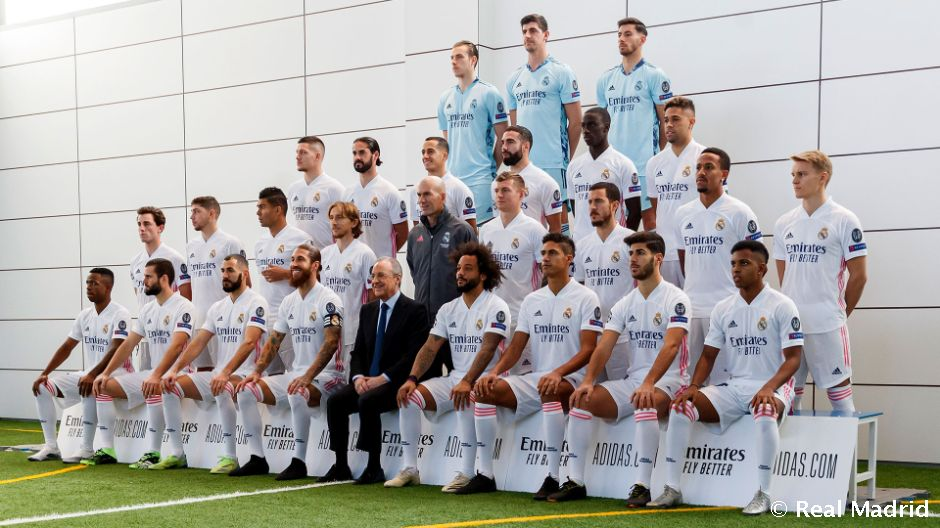
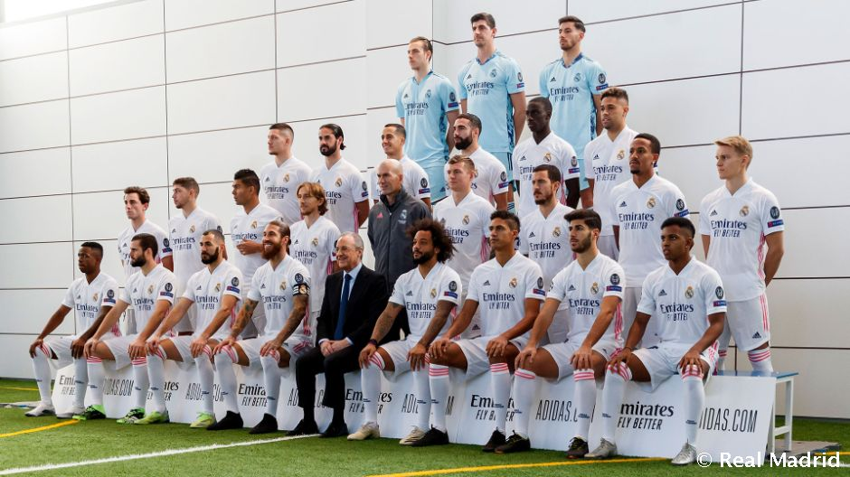

About
Real Madrid , in full Real Madrid Club de Fútbol, by name Los Blancos (Spanish: “the White”), Spanish professional football (soccer) club based in Madrid. Playing in all-white uniforms, which led to its nickname “Los Blancos,” Real Madrid is one of the world’s best-known teams, with fans in many countries.
Gallery
 

History
Though the club was founded in 1902, it was originally named Madrid Football Club; it wasn't until 1920 that King Alfonso XIII bestowed them with the title of "real" – or "royal" in English. These early years were reasonably successful for Real, as evidenced by their four consecutive Copa del Rey victories from 1905 to 1908. By the outbreak of the WWII, Real could boast with two La Liga titles and seven Copa del Rey trophies. The post-war period saw Santiago Bernabéu Yeste take over as the club's president, after having carried various functions at the club since joining its junior ranks in 1909. Faced with a difficult task of rebuilding the club, Bernabéu went on to construct a brand-new stadium – later renamed as the Santiago Bernabéu stadium – and sign a number of high-profile international players in order to compete at the European stage. With a bonafide dream team centered around the talents of Alfredo Di Stéfano, Ferenc Puskás and Francisco Gento, Real cruised to four La Ligas and one Copa del Rey by the end of the 60s. More impressively, they claimed the first five European Cups ever organized, handily destroying any opposition in their path from 1956 to 1960. This legendary crew is still considered by many to be the greatest football team ever assembled.
Achievments

Real Madrid CF has probably achieved all a football club could. With a record 35 La Liga titles, 19 Copa del Rey trophies, a sensational 14 European Cups/Champions Leagues and 2 UEFA Cups, Real are second to none in a competition for the greatest football club of all time. While the club enjoys fierce rivalries with Barcelona (El Clásico) and Atlético Madrid (El Derbi Madrileño), Real has been the most supported club in the country for the majority of its history. Many of the best players in the world have played in the clubs white shirts, including legends like Alfredo Di Stéfano and Ferenc Puskás.